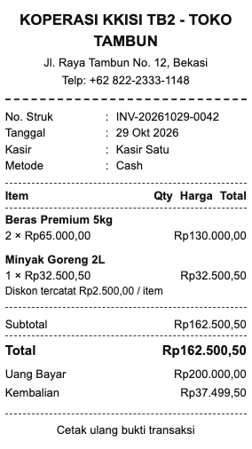
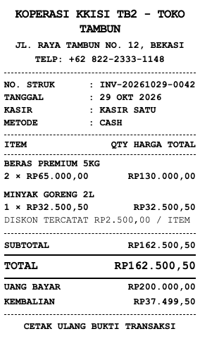
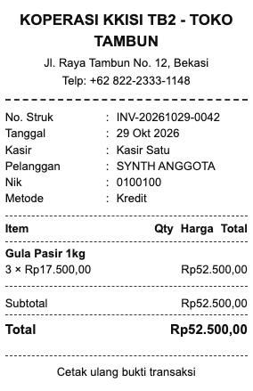
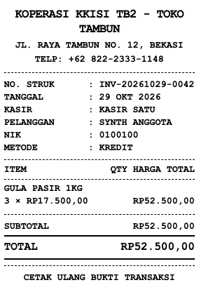
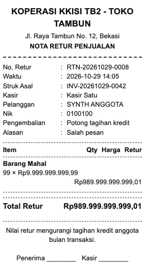
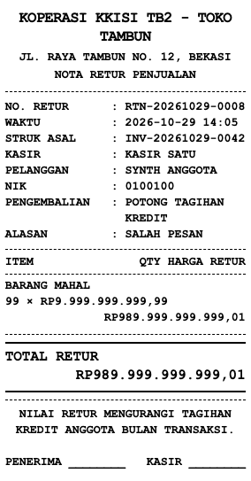
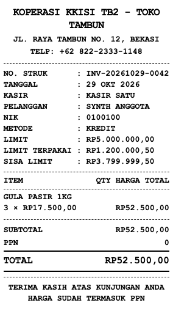

KKISI TB2 receipt typography
Synthetic browser screenshots of the real server-rendered templates at the existing 75 mm print width. These previews do not verify physical thermal darkness, feed, or cutting. Paper width: 75 mm. Left/right padding: 1.5 mm each; content width: 72 mm. Images show only the receipt paper. Values and transaction behavior are unchanged.
Cash reprint
BEFORE · PAPER 75 MM
AFTER · PAPER 75 MM
Kredit reprint
BEFORE · PAPER 75 MM
AFTER · PAPER 75 MM
Credit return — wide amount
BEFORE · PAPER 75 MM
AFTER · PAPER 75 MM
Checkout — member credit
AFTER: MEMBER LIMITS AND CHECKOUT FOOTER
Font sizes: body/details 10 pt, store 13 pt, grand total 12 pt. Receipt/member identifiers retain their original case; other receipt content uses CSS uppercase. Driver scale: 100%.